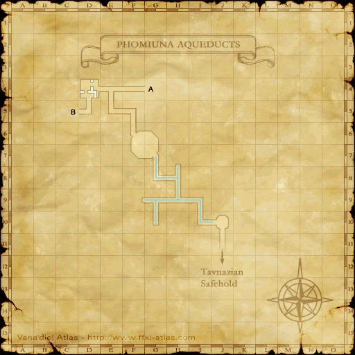
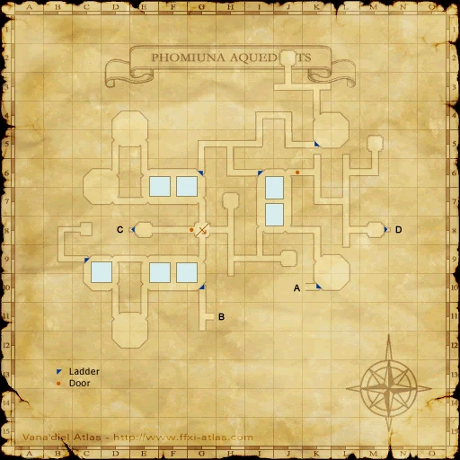
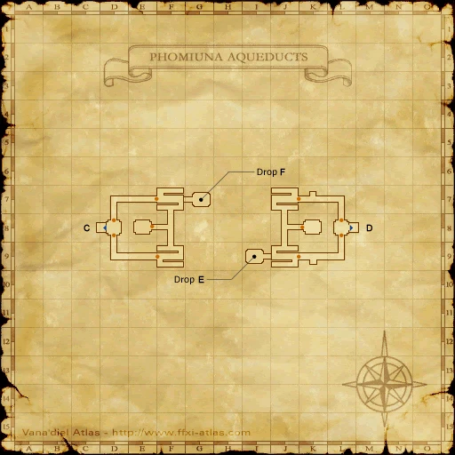

Before you begin
- Complete CoP 2-1.
Starting point
Despachiaire · Tavnazian Safehold · K-10, upper floor
People in this mission


Walkthrough
- Go upstairs, pass the Walnut Door at K-9 and speak to Despachiaire at K-10.
- Descend to the basement and inspect the Sewer Entrance at I-7 for the mission scene.
- Check the entrance again when ready to enter Phomiuna Aqueducts for Distant Beliefs.
Battle and progress notes
- Justinius on the upper floor offers optional context. The map quest Unforgiven is optional.
Completion and reward
Story progression.
What this opens
- Phomiuna Aqueducts
- CoP 2-3
Area maps
Open a zone below, then select a map to enlarge it. Match the named floors and grid coordinates in the steps; these are reference area maps, not a live position tracker.
Tavnazian Safehold


Phomiuna Aqueducts









Zone guides
References
Steps are an original summary of the linked walkthrough and reviewed source. Other servers’ bonus rewards are not included. How to read requirements, waits and battlefield notes.
Additional level-75 reference
|
Walkthrough
- Head to the top floor of Tavnazian Safehold and pass through the Walnut Door at K-9.
- Talk to Despachiaire at K-10 for a cutscene.
- Head all the way down to the basement level and examine the Sewer Entrance at I-7.
Game Description
- Mission Orders
- According to its inhabitants, the Tavnazian Safehold was carved out of solid rock by survivors of the Great War. Speak with the city's inhabitants to learn more of their grave situation.
Adapted from Eden Wiki: The Lost City · Contributors and history · CC BY-SA 4.0. Revision 9010. Layout, links and optional background text adapted for Zenith.